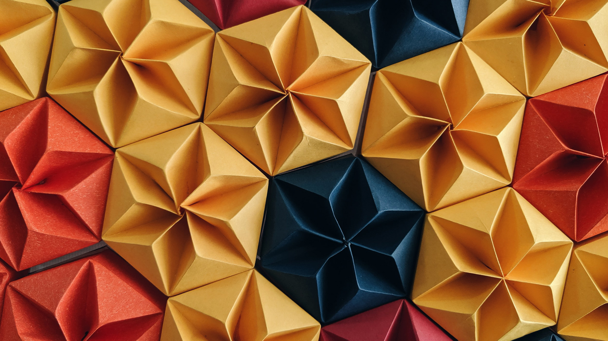

For centuries, cultures have come up with creative ways to artistically approach, adopt, and adapt the paper craft. While many of these practices, including Korean Hanji, can be individually traced to specific countries of origin, most-including papier mache, a French-sounding craft that was actually conceived in ancient China boast colorful histories that span cultures, countries, and even continents. One popular practice that has left a particularly extensive paper trail across the globe is origami, the art of paper folding.
Origami is the art of paper folding. Its name derives from Japanese words ori (folding) and kami (paper). Traditional origami consists of folding a single sheet of square paper (often with a colored side) into a sculpture without cutting, gluing, taping, or even marking it.
Unlike kiragami, the variation of origami that uses paper cutting, origami only uses folding and creasing techniques. Most projects use a combination of the same basic techniques. These include pleat folds, mountain folds, reverse folds, sink folds, squash folds, and petal folds.
Although origami can be made with any foldable paper, most artists prefer to use specialized origami paper. These materials tend to be thinner than drawing paper, and feature one colored or patterned side and one blank side.